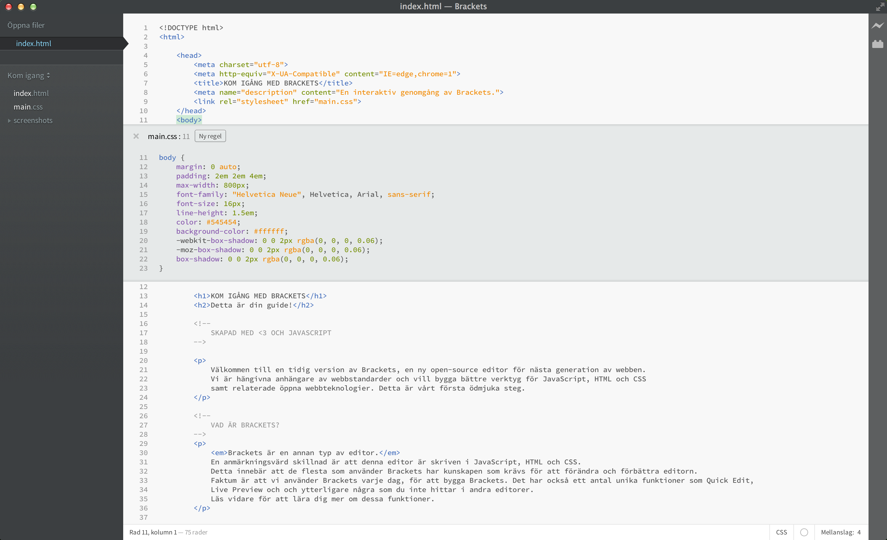

Välkommen till en tidig version av Brackets, en ny open-source editor för nästa generation av webben. Vi är hängivna anhängare av webbstandards och vill bygga bättre verktyg för JavaScript, HTML och CSS samt relaterade öppna webbteknologier. Detta är vårt ödmjuka första steg.
Brackets är en annan typ av editor. En anmärkningsvärd skillnad är att denna editor är skriven med JavaScript, HTML och CSS. Detta innebär att de flesta som använder Brackets har kunskapen som krävs för att förändra och förbättra editorn. Faktum är att vi använder Brackets varje dag, för att bygga Brackets. Det har också ett antal unika funktioner som Quick Edit, Live Preview och och ytterligare några som du inte hittar i andra editorer. Läs vidare för att lära dig mer om dessa funktioner.
Du behöver inte längre tappa sammanhanget när du flyttar mellan olika dokument. När du redigerar HTML kan du använda kortkommandot Cmd/Ctrl + E för att öppna en inline-editor som visar all relaterad CSS. Gör förändringen i din CSS, tryck på ESC och du är tillbaka i HTML. Du kan också lämna CSS-reglerna öppna och göra dem till en del av din HTML-editor. Om du trycker på ESC utanför en inline-editor döljs samtliga.
Vill du se hur det fungerar? Placera markören -elementet och tryck Cmd/Ctrl + E. Då visas CSS quick editorn ovan. Till höger kan du se en lista över alla CSS-regler som är relaterade till detta element. Skrolla igenom reglerna med kortkommandot Alt + Upp/Ner för att hitta en du vill redigera. Du kan använda samma kortkommando för JavaScript-kod för att visa definitionen av en funktion när markören placeras på funktionens namn där du anropar den. Tills vidare kan inline-editorer inte nästlas så du kan bara använda Quick Edit från den "fullstora" editorn.
Du vet den där "spara och ladda om-proceduren" vi använt oss av i flera år? Den där du gör en ändring i din editor, sparar, går till webbläsaren och laddar om för att se resultatet? Med Brackets behöver du inte göra det.
Brackets öppnar en direktlänk till din lokala webbläsare och skjuter ut dina CSS-ändringar medan du skriver! Du kanske redan använder något liknande webbläsarverktyg men med Brackets behöver du inte kopiera och klistra in koden fram och tillbaka mellan webbläsare och editor. Din kod körs i webbläsaren men skrivs i din editor!
Brackets gör det enkelt att se hur dina HTML- och CSS-ändringar kommer att påverka sidan. När din markör står på en CSS-regel markerar Brackets samtliga berörda element i webbläsaren. På samma sätt markerar Brackets respektive element i webbläsaren när du redigerar HTML-koden.
Om du har Google Chrome installerat kan du prova denna funktion själv. Klicka på blixtikonen i det övre högra hörnet i ditt Brackets-fönster eller använd kortkommandot Cmd/Ctrl + Alt + P. När Live Preview är aktiverat i ett HTML-dokument kommer alla länkade CSS-dokument att kunna editeras i realtid. Ikonens färg kommer att byta färg från grå till guld när Brackets lyckats skapa en länk till din webbläsare. Om du sedan plaerar markören på -taggen ovan se du hur en blå markeringen visas runt bilden i Chrome. Du kan sedan använda Cmd/Ctrl + E för att visa de relaterade CSS-reglerna. Prova att ändra tjockleken på border-egenskapen från 1px till 10px eller att ändra backgrundsfärgen från "dimgray" till "hotpink". Om Brackets och din webbläsare körs sida vid sida kommer du att se dina ändringar genomföras direkt i webbläsaren. Coolt va?För tillfället stöder Brackets bara Live Preview för CSS. Dock laddas webbläsaren automatiskt när du sparar HTML- eller JavaScript-dokument. Vi jobbar för fullt med att utveckla stöd för Live Preview även för HTML och JavaScript. Live previews fungerar just nu bara i Google Chrome men med tiden hoppas vi kunna erbjuda denna funktionalitet i alla större webbläsare.
För de av oss som fortfarande inte memorerat färgkoderna för HEX eller RGB gör Brackets det snabbt och enkelt att se vilken färg som används. När du pekar över ett färgvärde eller gradient, i antingen HTML eller CSS, visas en förhandsgranskning av färgen/gradienten automatiskt. Detsamma gäller bilder: peka på bildens sökväg i Brackets så visas en tumnagelversion av bilden.
Du kan prova Quick View själv genom att placera markören på -taggen i början av detta dokument och trycka Cmd/Ctrl + E för att öppna snabbeditorn för CSS. När du pekar över ett färgvärde i CSS-koden visas motsvarande färg. Du kan utnyttja samma funktion med gradients i snabbeditorn - placera markören på -taggen och peka på dess background-image-egenskap. Du kan också prova förhandvisningen av bilder genom att placera markören vid skärmavbildningen tidigare i detta dokument.Brackets är ett open-source-projekt. Webbutvecklarefrån hela världen bidrar för att göra Brackets till en bättre kodeditor. Många andra bygger tillägg som ökar Brackets funktionalitet. Bidra med dina åsiker, idéer eller bidra med kod direkt till projektet.